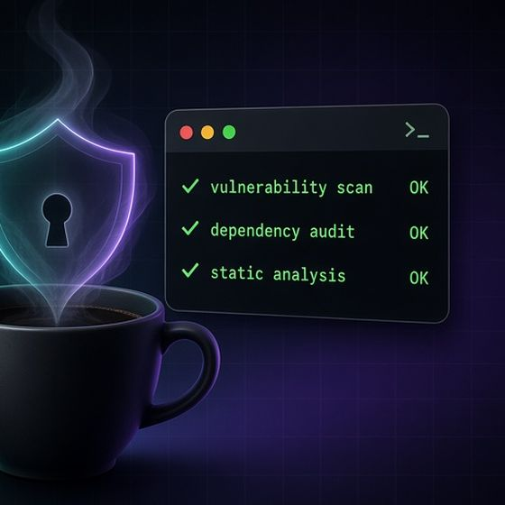

npm package · MIT · v2 · zero deps
passglyph
Hieroglyphs instead of dots. Matching passwords, matching glyphs.
passglyph v2 replaces the masking dots inside your password fields with Egyptian hieroglyphs. If the confirmation matches, both fields show the same sequence; a typo changes every glyph from the first wrong character on. Each glyph comes from a keyed hash of the whole prefix with a fresh per-page key, so nothing about the characters is revealed, and repeated letters don't repeat glyphs. The input stays type="password".
npm i passglyph
Live demo
| Alphabet | 32 hieroglyphs |
|---|---|
| A typo slips past one position | 1 in 32 |
| …past every later position (10 chars) | 1 in 1015 |
| Leak to a screenshot (no key) | 0 bits |
| If the key were stolen too | 5 bits per position |
With 5 bits a single mistyped position is caught 31 times out of 32, and the following positions almost always differ as well. The glyphs reveal nothing without the per-page key, which is non-extractable and never leaves memory.
Threat model, briefly
- No character-to-glyph mapping. Glyph i = HMAC-SHA-256(key, password[0..i]) truncated to 4–6 bits. Identical characters don't give identical glyphs, and a mismatch shows from the first wrong position on.
- Fresh 128-bit key per form from
crypto.getRandomValues, imported as a non-extractable WebCrypto key. The raw bytes are wiped, so a screenshot or recording is meaningless in any other session. - Honest leak: a recording gives about b bits per position under that session's key. That's useless without the key, but with it, prefix hashing lets an attacker recover the password one character at a time (about 95 guesses per position). The key never leaves memory, and an attacker with memory access can read the field anyway.
- Typo position is visible: the sequences diverge exactly where you mistyped. That's the point, and it's documented.
- No extra length or timing leak: one glyph per character, exactly like the dots, redrawn in one frame per input with no animation.
- Canvas only. No code points, glyph names or derived bits in the DOM. The snapshot is identical for any two passwords. Overlays are
aria-hidden, and a live region says "Passwords match". - Real input untouched: it stays
type="password", so autofill, password managers, mobile keyboards and screen readers keep working. It falls back to dots if anything is unsupported.
Not a strength meter, and no help against keyloggers or malicious scripts on the page. Full write-up: SECURITY-DESIGN.md · launch post.
Usage
// Vanilla (inline hieroglyphs by default)
import { attach } from 'passglyph';
const detach = attach(pw, confirm);// v1 badge mode
attach(pw, confirm, { mode: 'badge' });<!-- Web component -->
<pass-glyph>
<input type="password"> <input type="password">
</pass-glyph>// React / Vue
usePassGlyph(pwRef, confirmRef, { bits: 5 });Support this project
Support open-source security tools
I build free, open-source tools that help developers ship safer websites. Every coffee helps keep them maintained, documented and free for everyone.
Buy me a coffee (opens Stripe in a new tab)Secure checkout by Stripe


More tools by Louis Wright
Flagship Next.js 16 App Router libraries · pre-alpha · 2
- next-tonguePre-alphaCompiler-first, type-safe i18n for the Next.js 16 App Router.ICU messages compiled at build time, works with TurbopackLocale from route params, so pages stay in the static shellZero dependencies beyond next and react
- next-heraldPre-alphaTyped metadata, safe JSON-LD, sitemaps and an SEO CI check for the Next.js 16 App Router.Returns native Metadata, Sitemap and Robots objectsXSS-safe JSON-LD with an entity graph by defaultherald check: a dependency-free CI crawler for SEO mistakes
Sentinels security scanners & CI gates · 20
- passglyphMatching glyphs for password and confirm fields: spot a typo without revealing the password.
- binary-sentinelStatic PE and ELF triage in pure JavaScript: headers, sections, entropy, imports, imphash, packer hints, capabilities and hardening checks.
- cookie-sentinelAudit the cookies your site sets before attackers do.
- defang-sentinelDefang and refang indicators of compromise, and stop live malicious links from getting into threat reports, tickets and docs.
- dns-sentinelAudit your domains' DNS and email security before attackers or spammers find the gaps.
- dockerfile-sentinelSecurity linter for Dockerfiles and Docker Compose files: root containers, baked-in secrets, curl | sh, unpinned and end-of-life base images, privileged services, Docker socket mounts and exposed databases.
- dotenv-sentinelValidate .env files against .env.example or a schema, catch weak and default secrets, and keep .env files out of git, including its history.
- hash-sentinelCheck file hashes against your own threat feeds, MISP and optional public lookups, offline-first.
- header-sentinelFail CI when deployed URLs ship weak HTTP security headers.
- ioc-sentinelExtract indicators of compromise from threat reports, logs, emails and binaries, then export them as CSV, STIX 2.1, JSON or SARIF.
- license-sentinelA license compliance gate for npm projects, plus CycloneDX/SPDX SBOMs and a NOTICES file.
- malware-report-sentinelTurn a suspicious file into a structured malware triage report (Markdown, HTML or JSON) using static analysis only.
- phish-sentinelOffline phishing URL heuristics with an explainable score: lookalike and homograph domains, brand impersonation, IP hosts, user@host tricks, risky TLDs, shorteners, free hosting and redirect chains.
- redirect-sentinelFind open redirects and mixed content in a built site (offline) or a live crawl: http:// scripts and styles on HTTPS pages, insecure forms, client-side redirects fed by the URL, open redirect rules in _redirects/vercel.json/nginx, HTTPS downgrades, and optional safe redirect probing.
- sbom-diff-sentinelSee exactly what a pull request changes in your software bill of materials, and block the risky changes.
- securitytxt-sentinelValidate security.txt (RFC 9116) and robots.txt for your domains, or as local files in CI before you deploy them.
- sri-sentinelSubresource Integrity for your built site: generate, write and check it in CI.
- static-link-sentinelFail CI on broken links before you deploy.
- supply-chain-sentinelOne supply-chain gate for npm projects: risky dependency changes, license policy, new vulnerabilities and SBOM drift, and GitHub Actions hardening, with one config, one report and one exit code.
- tls-sentinelCheck TLS endpoints for expiring or untrusted certificates, hostname mismatches, missing intermediates, weak keys and signatures, TLS 1.0/1.1, weak ciphers and missing TLS 1.3.
Gauges package & repo quality · 8
- commit-gaugeA lightweight Conventional Commits linter for git hooks and CI, with clear fix-up suggestions.
- dead-deps-gaugeFind dependencies you declare but never use, and imports that are missing from package.json.
- engines-gaugeMake engines.node, your CI matrix, .nvmrc and your dependencies' engine requirements agree.
- monorepo-gaugeHygiene checks for npm, yarn and pnpm workspaces: circular internal deps, mismatched shared deps, version drift and missing fields.
- pkg-field-gaugeValidate package.json before you publish: exports/main/types consistency, files, repository, keywords and sideEffects.
- publish-gaugeCheck what npm publish will actually ship, before you publish it.
- readme-gaugeLint READMEs for missing sections, broken badges, stale install commands and missing usage examples.
- semver-gaugeA CI gate that checks your version bump matches what changed, and that the CHANGELOG has a real entry for it.
Beacons SEO & discoverability · 9
- answer-beaconCheck that your built static site is ready for answer engines and AI search: direct answers, FAQ schema, llms.txt, AI crawler access and E-E-A-T signals.
- canonical-beaconCheck canonical tags and hreflang clusters in your built static site: one canonical per page, pointing at a real, indexable, final URL, and hreflang clusters that are valid, self-referencing and reciprocal.
- duplicate-beaconDetect duplicate and near-duplicate titles, meta descriptions and page bodies across your built static site.
- heading-beaconAudit the heading structure of your built static site: one visible H1 per page, a logical H1 → H2 → H3 outline, and headings that actually say something.
- index-beaconCheck which pages of your built static site search engines are told not to index or follow, via meta robots and X-Robots-Tag, against the rules you actually intend.
- meta-beaconAudit titles, meta descriptions, Open Graph and Twitter/X cards across a built static site.
- orphan-beaconFind the pages in your built static site that nothing links to, and measure how many clicks every page is from the homepage.
- schema-beaconValidate JSON-LD and microdata against schema.org and Google rich-result requirements, across your whole built site.
- sitemap-beaconAudit XML sitemaps against your built static site: every URL should be a real, indexable, canonical page, and every such page should be listed.
Wardens privacy, compliance & accessibility · 8
- a11y-wardenWCAG 2.2 accessibility audit of static HTML for CI, with a baseline so you can adopt it on an existing site and only fail on new problems.
- consent-wardenCheck that your cookie banner actually behaves: nothing non-essential loads before opt-in, Reject is as easy as Accept, and consent can be withdrawn.
- dsar-wardenAssemble Data Subject Access Request exports from many systems into one structured, checksummed bundle, and catch the mistakes before you send it.
- gpc-wardenCheck that your built site honours Global Privacy Control: it reads the signal and suppresses sale/share trackers when it is on.
- pii-log-wardenFind and redact personal data in log files: emails, phone numbers, IP addresses, card numbers and national IDs.
- policy-drift-wardenCompare the trackers and third parties your built site actually loads with what its privacy policy says, and fail CI when they drift apart.
- retention-wardenLint your data-retention policy as code: every data category gets a period, a legal basis and an action at expiry.
- tracker-wardenInventory every third-party tracker, pixel and SDK your built static site loads, with vendor, company and category, and gate CI on an approved-vendor list.
Pulses web performance · 9
- favipulseGenerative favicons with badges, progress rings, pulse and per-environment icons. Replaces favico.js and tinycon.
- bundle-pulseA CI gate for JavaScript and CSS bundle size: budgets on raw, gzip and brotli sizes, and a diff against your base branch.
- cache-pulseCheck that your static hosting config caches the right things: fingerprinted assets for a year, HTML revalidated, and nothing stale after a deploy.
- font-pulseAudit how your built site loads web fonts: font-display, preloads, WOFF2, subsetting, unused weights and total font payload.
- image-pulseFind oversized, unoptimised and wrongly formatted images in your built site, before they slow down your Largest Contentful Paint.
- lazy-pulseLazy-load what is below the fold, never the LCP image: a static lazy-loading audit for your built site.
- render-pulseFind the CSS and JavaScript that block first paint in your built site, with the defer, async, media or critical-CSS fix for each.
- thirdparty-pulseHow much does each third-party script cost your pages? Estimated bytes, requests and main-thread time per page and per vendor, checked against budgets.
- vitals-pulseFail CI when Core Web Vitals get worse: LCP, CLS and an INP proxy, gated on thresholds and on regressions against your baseline.